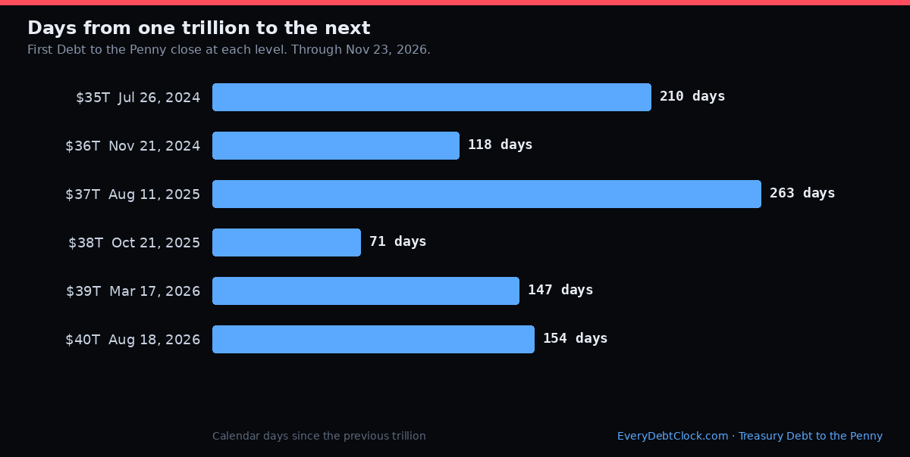
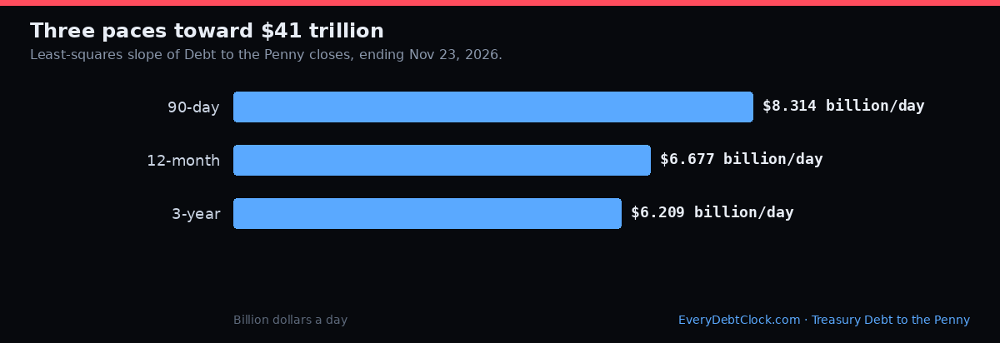
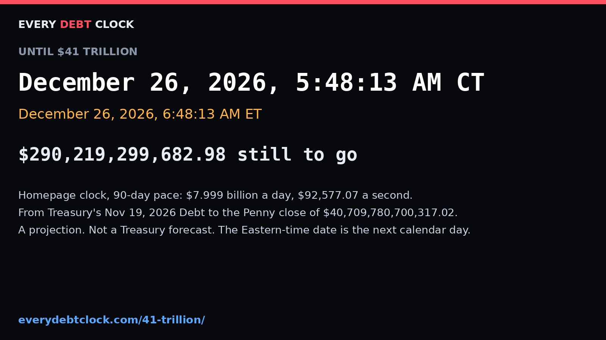
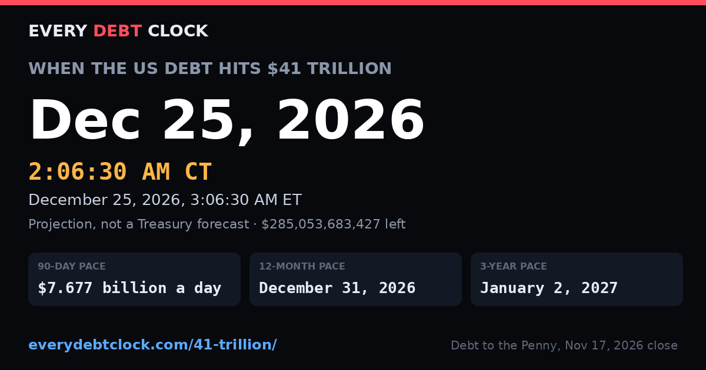

Press kit: the US debt and $41 trillion
At the same 90-day pace as the homepage clock, the projection reaches $41 trillion on December 26, 2026, 5:48:13 AM CT (December 26, 2026, 6:48:13 AM ET). That instant is computed from Treasury's Nov 19, 2026 Debt to the Penny close and the homepage per-second rate. It is a projection, not a Treasury forecast. The Central-time date window from the two fits of that same 90-day stretch is December 26, 2026 through December 27, 2026 (Central).
Updated Nov 19, 2026
Exact projected time · 90-day pace
December 26, 2026, 5:48:13 AM CT
December 26, 2026, 6:48:13 AM ET
The countdown and the two running totals update in the browser from the clock's base, rate and t0. With JavaScript off, the countdown is the gap at the moment this page was built (Nov 20, 2026 7:01 PM CT). The projected clock time does not tick; it changes when Treasury's next close resets the base.
The date window
Both ends use the closes in the homepage's 90-day window (trailing 90 days (2026-08-24 to 2026-11-19), 61 closes). The least-squares slope is the rate the clock ticks at, $7.999 billion a day. The homepage per-second rate matches a least-squares fit of the total itself over those same 61 closes. A straight line from the first close in that window (Aug 24, 2026, $40,035,385,103,646.14) to the last (Nov 19, 2026, $40,709,780,700,317.02) is $7.748 billion a day and reaches $41 trillion on December 27, 2026, 9:58:47 AM CT (December 27, 2026, 10:58:47 AM ET).
The window is those two fits, December 26, 2026 through December 27, 2026 (Central). It is not a confidence interval. The least-squares instant is late on December 31 in Central time and already January 1 in Eastern time, so the calendar date reporters print depends on the time zone, and the next Debt to the Penny closes can move it.
Three paces, side by side
Each row starts from the same official close, $40,709,780,700,317.02 on Nov 19, 2026, and runs forward at its own per-second rate. Only the 90-day row is the homepage clock. The 12-month row is the trailing 365 days. The 3-year row is the trailing 1,095 days. All three are least-squares slopes of Debt to the Penny closes, the same method as the 90-day rate.
| Pace | $ / day | $ / second | Projected crossing |
|---|---|---|---|
| 90-day least squares, homepage clockLeast squares, the homepage clock's per-second rate. 61 closes, Aug 24, 2026 to Nov 19, 2026. | $7.999 billion | $92,577.07 | December 26, 2026, 5:48:13 AM CTDecember 26, 2026, 6:48:13 AM ET |
| 12-month least squaresLeast squares on the trailing 365 days of closes. 252 closes, Nov 19, 2025 to Nov 19, 2026. | $6.605 billion | $76,441.15 | January 2, 2027, 9:37:16 PM CTJanuary 2, 2027, 10:37:16 PM ET |
| 3-year least squaresLeast squares on the trailing 1,095 days of closes. 752 closes, Nov 20, 2023 to Nov 19, 2026. | $6.197 billion | $71,727.59 | January 5, 2027, 6:55:31 PM CTJanuary 5, 2027, 7:55:31 PM ET |
The clock already stores a separate one-year context rate, and it is not the 12-month column above. It is the Nov 19, 2026 close minus the Nov 19, 2025 close, divided by the seconds between those two end-of-day instants: $76,433.52 a second, $6.604 billion a day. At that two-point rate, $41 trillion falls on January 2, 2027, 9:43:35 PM CT (January 2, 2027, 10:43:35 PM ET). The homepage ticks at the 90-day least-squares rate, not this one.
The homepage clock stops projecting at the statutory limit, February 4, 2027, 4:18:45 AM CT. Each projected crossing on this page is before that.
Official figure versus the live clock
Debt to the Penny is the debt at the close of business. This site's methodology says each record is published the next business day, usually in the afternoon (around 3 PM Central in recent weeks). That is this site's description of recent timing, not a clock time Treasury publishes as a rule. Between posts, the homepage keeps moving at the 90-day pace. That running total is an estimate until the next close.
December 31, 2026 is a Thursday. January 1, 2027 is a Friday and a federal holiday, and January 2 and 3 are the weekend. The next day that is not a weekend and not January 1 is Monday, January 4, 2027. If Treasury follows the usual next-business-day pattern, the December 31 close would be posted then. This check skips only weekends and January 1.
The last business day of December has been a large up day, and part of the jump reversed on the next close. Interest credited to trust funds at the end of June and December is one reason the daily series is lumpy; the table is the measured change, not a split of how much was interest, and it is not a forecast for December 31, 2026.
| Close date | Amount | Change from the row above | |
|---|---|---|---|
| previous close | Dec 30, 2024 | $36,150,157,230,460.04 | — |
| December 31 | Dec 31, 2024 | $36,218,605,311,689.91 | $68,448,081,229.87 |
| next close | Jan 2, 2025 | $36,169,957,618,760.21 | −$48,647,692,929.70 |
| previous close | Dec 30, 2025 | $38,372,153,717,621.09 | — |
| December 31 | Dec 31, 2025 | $38,514,009,184,232.72 | $141,855,466,611.63 |
| next close | Jan 2, 2026 | $38,422,818,570,606.72 | −$91,190,613,626.00 |
As of the Debt to the Penny rows through Nov 19, 2026. Source: Treasury, Debt to the Penny.
Days from one trillion to the next
A crossing is the first Debt to the Penny close at or above that trillion, with the prior close below it. That is the rule on the $41 trillion countdown. The dates below were recomputed from the daily rows and match the crossings stored for that page. Days are the calendar days from the previous trillion's first close to this one, not a count of business days. The dollar change is the difference of those two closes, so it is not exactly $1 trillion.
| Level | First close at or above | Amount | Prior close | Days | The next close |
|---|---|---|---|---|---|
| $35 trillion | Jul 26, 2024 | $35,001,278,179,208.67 | $34,997,540,505,103.33prior close Jul 25, 2024 | 210 daysfrom $34T on Dec 29, 2023 | Next close Jul 29, 2024 stayed at or above, $35,004,415,930,299.00 |
| $36 trillion | Nov 21, 2024 | $36,034,994,586,981.97 | $35,973,905,978,114.70prior close Nov 20, 2024 | 118 daysfrom $35T on Jul 26, 2024 | Next close Nov 22, 2024 stayed at or above, $36,047,523,137,936.35 |
| $37 trillion | Aug 11, 2025 | $37,004,817,625,842.56 | $36,998,491,853,555.08prior close Aug 8, 2025 | 263 daysfrom $36T on Nov 21, 2024 | Next close Aug 12, 2025 stayed at or above, $37,070,422,809,316.32 |
| $38 trillion | Oct 21, 2025 | $38,019,813,354,700.26 | $37,980,273,670,431.33prior close Oct 20, 2025 | 71 daysfrom $37T on Aug 11, 2025 | Next close Oct 22, 2025 was back under, $37,990,672,926,605.56 |
| $39 trillion | Mar 17, 2026 | $39,016,762,910,245.14 | $38,992,187,847,500.92prior close Mar 16, 2026 | 147 daysfrom $38T on Oct 21, 2025 | Next close Mar 18, 2026 was back under, $38,976,827,976,841.63 |
| $40 trillion | Aug 18, 2026 | $40,047,425,768,420.22 | $39,986,657,878,071.92prior close Aug 17, 2026 | 154 daysfrom $39T on Mar 17, 2026 | Next close Aug 19, 2026 stayed at or above, $40,012,700,535,679.44 |
- The first $38 trillion close was Oct 21, 2025. The next close, Oct 22, 2025, was back under, at $37,990,672,926,605.56. Every later close in this series, through Nov 19, 2026, was at or above $38 trillion.
- The first $39 trillion close was Mar 17, 2026. The next close, Mar 18, 2026, was back under, at $38,976,827,976,841.63. The last close in this series that was back under $39 trillion was May 15, 2026, at $38,997,244,508,055.09.
- Every Debt to the Penny close after the $40 trillion crossing, through Nov 19, 2026, stayed at or above $40 trillion.

Download the days chart (PNG) Download the pace chart (PNG)



Clock image and share image
The clock image is a still of the 90-day projection for a story. The share image is what /41-trillion/ uses for Open Graph and Twitter. Both were drawn from the same projection as the table.


Countdown embed
The widget below counts down to $41 trillion. It does not set a cookie and it does not load analytics. The page it links to is the $41 trillion countdown.
Banner that turns on at the next trillion
The crossing sentence is not in this page. The browser writes it only after the live clock reaches that level, or when Treasury posts a close that reaches it. Until then the page states the projection from the Nov 19, 2026 close of $40,709,780,700,317.02. Add ?cross41=preview to the homepage to preview the sentence. The preview says it is a preview.
The arithmetic
The homepage formula is value = base + rate × (now − t0). t0 is the end of the record date in Eastern time, 11:59:59 PM. The crossing time is t0 + ($41 trillion − base) / rate.
- Base, Debt to the Penny close of Nov 19, 2026: $40,709,780,700,317.02.
- t0: 1795150799 seconds since the Unix epoch (November 19, 2026, 11:59:59 PM ET).
- Rate: 92577.06517287 dollars per second ($7.999 billion a day).
- Gap: $290,219,299,682.98.
- Seconds from t0 to the crossing: 3,134,894.146.
- Crossing, unrounded Unix time: 1798285693.146. The times above are that instant rounded to the nearest second.
Series used for the longer paces and the crossing table: 801 Debt to the Penny closes from Sep 11, 2023 through Nov 19, 2026, read from the Fiscal Data API on 2026-11-20. Rows after the clock's as-of date are not used.
Sources
- Treasury, Debt to the Penny. Latest close used here: Nov 19, 2026, $40,709,780,700,317.02. As of Nov 19, 2026.
- Fiscal Data API, debt_to_penny. Daily totals from Sep 11, 2023 through Nov 19, 2026.
- Every Debt Clock methodology. The 90-day least-squares rate, the 3 PM Central publication note, and the next-business-day rule.
- $41 trillion countdown. Same base and per-second rate as this page.
Contact
Questions and corrections: hello@everydebtclock.com.